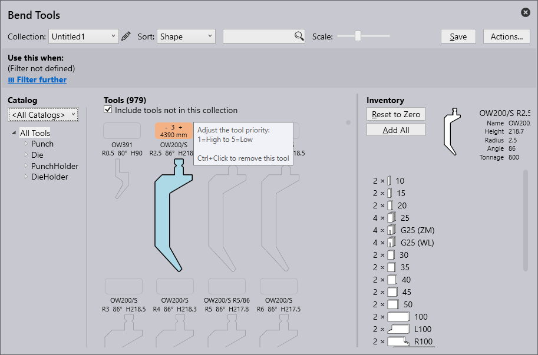
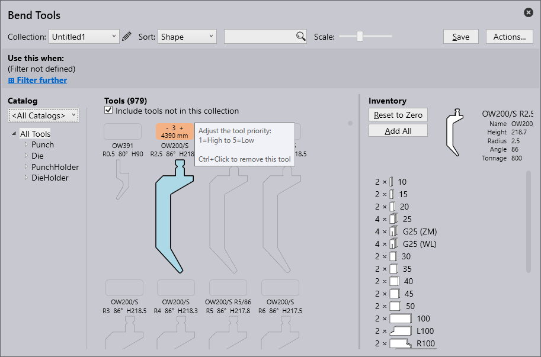

Ferramentas de Dobra
Os termos usados na criação da ferramenta de dobra são descritos abaixo:
| N.º S. | Termo | Significado |
|---|---|---|
1 |
Listas de ferramentas |
A lista de ferramentas a serem trabalhadas pode ser selecionada aqui. Novas listas de ferramentas podem ser criadas com a opção Novo. |
2 |
Ordenar |
As ferramentas podem ser classificadas de acordo com critérios específicos aqui (altura, nome, forma, raio, ângulo, largura da matriz, prioridade, gestão de ferramentas). |
3 |
Pesquisar |
As ferramentas podem ser pesquisadas usando a barra de pesquisa. Aqui, por exemplo, uma pesquisa alfabética pode ser feita por nomes de ferramentas. Além disso, podem ser feitas solicitações de pesquisa mais complexas. Esta solicitação de pesquisa encontra todas as ferramentas com UT ou EV no nome que também atendem as seguintes condições: ângulo ≤ 30, altura ≥ 140, altura ≤ 220, raio = 1. |
4 |
Escalonar |
O tamanho da vista das ferramentas pode ser alterada com o controle deslizante. |
5 |
Ações |
As seguintes ações podem ser realizadas: - A Adicionar catálogo: Para adicionar diferentes tipos de máquinas. - B Nova lista de ferramentas: Para criar uma nova coleção de ferramentas. - C Clonar lista de ferramentas: para clonar a coleção de ferramentas criada. - D Exportar lista de ferramentas: A lista de ferramentas atual pode ser exportada como um arquivo ".btools". - E Importar lista de ferramentas: Uma lista de ferramentas pode ser importada como ".btools". - F Importação de ARV: uma ferramenta pode ser importada de um arquivo ARV, essas ferramentas são então arquivadas de forma personalizada no catálogo de ferramentas (isso será criado se não estiver disponível anteriormente). - G Importação de DXF: Uma ferramenta pode ser importada de um arquivo DXF. Essas ferramentas são então arquivadas de forma personalizada no catálogo de ferramentas (isso será criado se não estiver disponível anteriormente). - H Redefinir lista de ferramentas: Restaura a lista de ferramentas ao seu estado padrão. - I Cancelar: Fecha a janela "Ações…" . |
6 |
Gerenciamento de ferramentas |
Mostra uma visão geral da ferramenta selecionada.As seguintes ações podem ser realizadas: - Redefinir para zero: O inventário total da ferramenta selecionada é removido da lista de ferramentas atual. -Adicionar um conjunto: Apenas um conjunto da ferramenta selecionada é adicionado à lista atual. -Adicionar comprimento: Para adicionar o comprimento da ferramenta - Adicionar tudo: o inventário completo da ferramenta selecionada é carregado na lista de ferramentas atual. O inventário é definido na lista de ferramentas <Todas as ferramentas>. - Salvar: Para salvar as alterações aplicadas. |
7 |
Inventário de ferramentas |
Exibe o inventário da ferramenta selecionada. Clique com o botão esquerdo do mouse para adicionar um segmento. |
8 |
Ferramenta sem inventário |
Uma ferramenta sem inventário não é incluída na lista de ferramentas atual. Ao clicar no campo vazio, um inventário padrão para a ferramenta é adicionado e a ferramenta é incorporada na lista de ferramentas atual. |
9 |
Prioridade |
Com base na prioridade dada pelo usuário, a ferramenta é selecionada. 1 = Ferramenta de alta prioridade 5 = Ferramenta de baixa prioridade |
10 |
Área de exibição de ferramentas |
Na área de exibição de ferramentas são exibidas todas as ferramentas da lista de ferramentas selecionadas. Ferramentas sem inventário também podem ser exibidas através da caixa de seleção "Incluir ferramentas sem inventário". |
11 |
Filtro de ferramenta |
Aqui, as ferramentas da lista de ferramentas atual são estruturadas de acordo com seu tipo e forma. A seleção de um elemento nesta estrutura permite a filtragem. |
12 |
Catálogo |
Um dos muitos catálogos de ferramentas instalado pode ser selecionado com isso (incluindo TRUMPF, personalizado, etc.). |
13 |
Condição do filtro |
A condição de filtro para a lista de ferramentas atual, que é usada automaticamente pelo auto-tooler. Isso pode ser usado para uma lista de ferramentas nomeada, mas não para a lista especial <Todas as ferramentas>. É possível filtrar de acordo com vários aspectos, incluindo máquina, material, espessura da chapa, etc. |
Criando uma Lista de Ferramentas
-
Para criar uma nova lista de ferramentas, clique no botão Ações e selecione Nova Lista de Ferramentas.

-
Renomeie a lista de ferramentas clicando no ícone de edição .

-
Por padrão, a nova lista de ferramentas exibe todas as ferramentas, incluindo Punção, Matriz, Porta-punção e Porta-matriz, mas não adicionadas ao inventário. Certifique-se de a caixa de seleção Incluir ferramentas que não estejam nesta coleção está marcada.

-
Para adicionar uma ferramenta, clique na caixa quadrada acima do nome da ferramenta e na tecla ctrl+enter para remover uma ferramenta.
 

-
A opção Usar isso quando permite que o usuário filtre e defina regras para uma nova lista, dependendo de vários critérios.
-
Clique em salvar para adicionar esta lista de ferramentas à coleção.
Adicionando Regra para uma Lista de Ferramentas
Clique na opção Filtrar mais para aplicar uma regra a partir de diferentes critérios de filtro disponíveis.
-
Máquina - Refere-se à máquina usada para operações de dobra.
-
Material - Indica o tipo de substância que está sendo dobrada.
-
Espessura - Denota a espessura do material que está sendo dobrado.
-
Raio - Refere-se à curvatura da dobra.
-
Superfície - Descreve a textura ou acabamento externo do material.
-
Tratamento - Descrever quaisquer processos pré ou pós-dobra aplicados ao material, como tratamento térmico, revestimento ou galvanização.
-
Película - Refere-se a uma camada protetora ou funcional aplicada ao material.
-
Tag - Rótulo personalizado atribuído para categorizar, filtrar e organizar elementos para facilitar a identificação.
| A lista de ferramentas deve ter pelo menos um critério de filtragem antes de poder ser salva (caso contrário, esta lista de ferramentas seria usada para cada peça). |

A imagem abaixo mostra um exemplo de critérios aplicados para criar uma regra:
| Quando várias listas de ferramentas correspondem a um requisito específico de ferramentas, a lista de ferramentas com a correspondência mais específica será usada. |